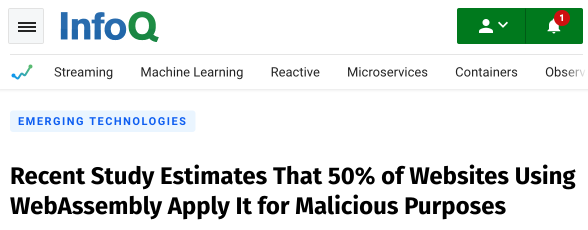

class: middle, center # WebAssembly ### Past, Present and Future <img style="border-radius: 50px" src="https://www.gravatar.com/avatar/67644641ead7ae60a795a14b7e102973?s=100" alt="Weihang Lo"> <a href="https://github.com/weihanglo">@weihanglo</a> --- class: middle, center # Past --- # What is WebAssembly? - First introduced in March 2017 - Language agnostic - Security in mind - Near native performance - Stack-based virtual machine - Faster in all aspects: (network) transmission, parsing, execution - LLVM to WASM: any LLVM-supported lang. can compile to Wasm ---  Ref: [LogRocket blog](https://blog.logrocket.com/webassembly-how-and-why-559b7f96cd71/) ---  Ref: [@linclark](https://twitter.com/linclark) --- - Fetch -> Parsing -> Compile -> Optimize -> Execute   Ref: [@linclark](https://twitter.com/linclark) --- # Asm.js and NaCl - [asm.js](http://asmjs.org) (from Mozilla) - Subset of JavaScript w/ optimizations - Type consistency + manual memory management - Executing faster (but parsing still slow) - NaCl (from Chrome) - The first Wasm impl. is using asm.js - Still need lots of parsing ```js function f(i) { "use asm" i = i|0; return (i + 1)|0; } ``` --- # Emscripten   - [@kripken](https://twitter.com/kripken) - Google Employee - former Mozillian --- # [Wasm: The Return of Flash?](https://words.steveklabnik.com/is-webassembly-the-return-of-java-applets-flash) - ~~Adobe Flash~~ - ~~Microsoft ActiveX~~ Wasm is - sandboxed - not owned by one company - follow web developing process (w3c) - no seperate VM --- class: middle, center # Present --- ## Wasm? .wat? What? **WebAssembly is a build target** - .wat: WebAssembly Text Format - .wasm: usually refer to binary format https://caniuse.com/#feat=wasm --- ```wasm (module (func $add (param $lhs i32) (param $rhs i32) (result i32) local.get $lhs local.get $rhs i32.add) (export "add" (func $dd)) ) ``` ```js function add(lhs, rhs) { return lhs + rhs; } ``` --- ```wasm (module (func $add (param $lhs i32) (param $rhs i32) (result i32) local.get $lhs local.get $rhs i32.add) (func (export "multiply") (result i32) (call $add (i32.const 1) (i32.const 1) ) i32.const 10 i32.mul) ) ``` --- ```wasm (module (import "console" "log" (func $log (param i32 i32))) (import "js" "mem" (memory 1)) (data (i32.const 0) "Hi") (func (export "writeHi") i32.const 0 ;; pass offset 0 to log i32.const 2 ;; pass length 2 to log call $log) ) ``` ```js function log(offset, length) { var bytes = new Uint8Array(memory.buffer, offset, length); var string = new TextDecoder('utf8').decode(bytes); console.log(string); } const mem = new WebAssembly.Memory({initial:1}); const importObject = { console: { log }, js: { mem } }; WebAssembly.instantiateStreaming(fetch('logger2.wasm'), importObject) .then(obj => { obj.instance.exports.writeHi(); }); ``` --- ## Types Value types - `i32` - `i64` - `f32` - `f64` Function - `funcref`: params + return type signature Additional - Memory: contiguous lineary memory - Table: storing not only bytes but ref (current only `funcref` in MVP) - Global: storing global variables --- ## Instructions Ref: [WebAssembly Instructions](https://webassembly.github.io/spec/core/text/instructions.html) - Memory access - `i32.load8_s` - `i32.load` - `i32.store` - Control flow - `loop` - `br` - `br_if` - Operators - `i32.add` - `i32.mul` - `i32.xor` - `f32.eq` - `f64.div` --- # Memory Model - Linear: No page fault? No seg fault? - Page at size 64KiB (current) - Growable/Resizable - browser/runtime may reject the requests for more memory - Isolated - Minimal instructions set - Memory space is restriced and provided by host environment - Web API: share memory accross modules via `WebAssembly.Table` and `WebAssembly.Memory` - Memory: like a address space - Table: only functions references/pointers in current stage (function address space) - Global: shared between stacks ---  --- ```c int factorial(int n) { if (n == 0) return 1; else return n * factorial(n-1); } ``` ```wasm (module (import "math" "exp" (func $exp (param f64) (result f64))) (func (export "doubleExp") (param $0 f64) (result f64) (f64.mul (call $exp (get_local $0) ) (f64.const 2) ) ) ) ``` --- # Ecosystem - [Rust](https://rust-lang.org): Offical support build target **without garbage collection** - Semi Offical [wasm-bindgen](https://github.com/rustwasm/wasm-bindgen) to bind Web/JS API - Semi offical [wasm-pack](https://github.com/rustwasm/wasm-pack) to pack npm module - [Go](https://golang.org): Offical support build target **with garbage collection** - [syscall/js](https://golang.org/pkg/syscall/js/) to interact with Web/JS API - Emscripten - [AssemblyScript](https://assemblyscript.org/): Like TypeScript. Compile to Wasm. --- # Showcases - [Artichoke](https://github.com/artichoke/artichoke) - MRI-compatible Ruby that builds for Wasm - Package single-binary apps - [Talk Slides on RubyConf 2019](https://artichoke.github.io/rubyconf/2019/#/) - 🎡 [Online playground here](https://artichoke.run/) - [TiDB in browser](https://play.pingcap.com/) - Full-fledged MySQL-compat database in browser. - Storing records in IndexedDB instead of actual K-V store - [RustPython](https://github.com/RustPython/RustPython) - Initiated by a Taiwanese. - Written in Rust that can [run in Wasm/wasi](https://rustpython.github.io/demo/) --- class: middle, center # Future --- ## Future Developement - WASI: Wasm run outside the Web - Stable Wasm ABI - impl. [wasmtime](https://wasmtime.dev/) - [Bytecode Alliance](https://bytecodealliance.org/) - Wasm alliance with Fastly, Cloudflare, Red Hat and Mozilla - [Garbage collection inside Wasm memory model](https://webassembly.org/docs/high-level-goals/) --- ## A Double Bladed Sword [](https://www.infoq.com/news/2019/10/WebAssembly-wasm-malicious-usage/) Ref: [Marius Musch from TU Braunschweig @ DIMVA 2019](https://www.dimva2019.org/wp-content/uploads/sites/31/2019/06/DIMVA19-slides-2-R.pdf) --- ## Random Stuff - [1Password WebExt in Wasm](https://blog.1password.com/1password-x-may-2019-update/) - [2048 AI in Rust/Wasm](https://ai2048.netlify.com/) [GitHub Link](https://github.com/VictorGavrish/ai2048) - [Sandspiel](https://sandspiel.club/) (w/ 2 million page views monthly) - [PSPDFKit 50,0000 C++ code to Wasm](https://pspdfkit.com/blog/2018/a-real-world-webassembly-benchmark/) - [Doom 3 in Wasm](https://wasm.continuation-labs.com/d3demo/) - More on: [https://madewithwebassembly.com/](https://madewithwebassembly.com/) --- # References - [WebAssembly Official Website](https://webassembly.org) - [Mozilla Research: WebAssembly format](https://research.mozilla.org/webassembly/) - [MDN: WebAssembly](http/s://developer.mozilla.org/en-US/docs/WebAssembly) - [A cartoon intro to WebAssembly](https://hacks.mozilla.org/2017/02/a-cartoon-intro-to-webassembly/)